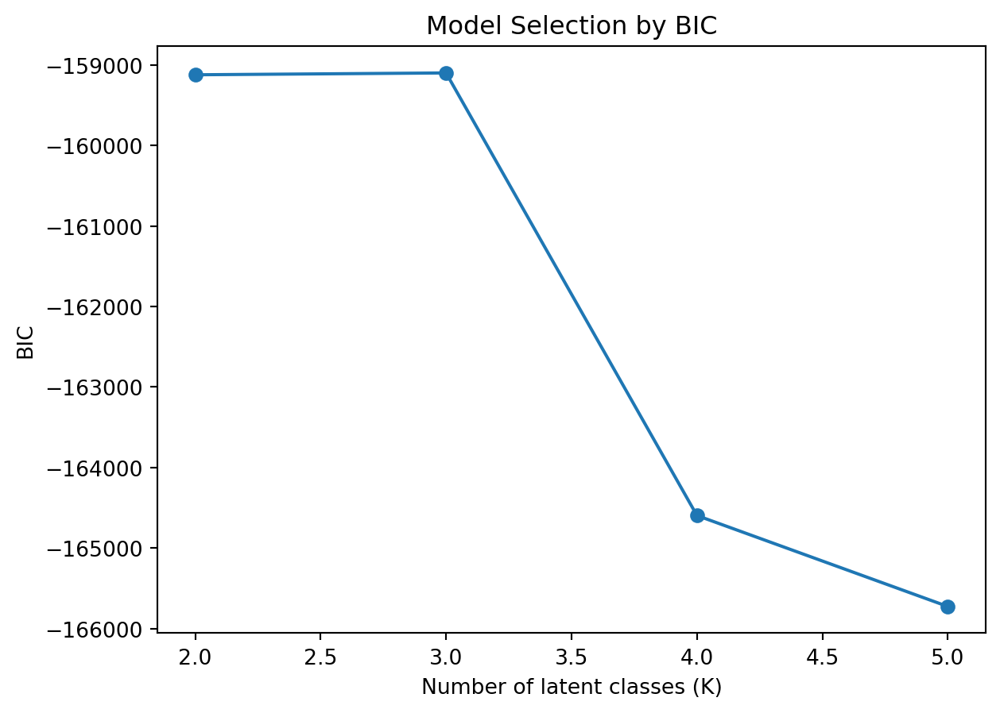

todo: write your own code to implement the k-means algorithm. Make plots of the various steps the algorithm takes so you can “see” the algorithm working. Test your algorithm on the Palmer Penguins dataset, specifically using the bill length and flipper length variables. Compare your results to the built-in kmeans function in R or Python.
todo: Calculate both the within-cluster-sum-of-squares and silhouette scores (you can use built-in functions to do so) and plot the results for various numbers of clusters (ie, K=2,3,…,7). What is the “right” number of clusters as suggested by these two metrics?
If you want a challenge, add your plots as an animated gif on your website so that the result looks something like this.
2a. K Nearest Neighbors
todo: use the following code (or the python equivalent) to generate a synthetic dataset for the k-nearest neighbors algorithm. The code generates a dataset with two features, x1 and x2, and a binary outcome variable y that is determined by whether x2 is above or below a wiggly boundary defined by a sin function.
todo: plot the data where the horizontal axis is x1, the vertical axis is x2, and the points are colored by the value of y. You may optionally draw the wiggly boundary.
todo: generate a test dataset with 100 points, using the same code as above but with a different seed.
todo: implement KNN by hand. Check you work with a built-in function – eg, class::knn() or caret::train(method="knn") in R, or scikit-learn’s KNeighborsClassifier in Python.
todo: run your function for k=1,…,k=30, each time noting the percentage of correctly-classified points from the test dataset. Plot the results, where the horizontal axis is 1-30 and the vertical axis is the percentage of correctly-classified points. What is the optimal value of k as suggested by your plot? :::
1b. Latent-Class MNL
Reshape yogurt data from wide to long format
The original yogurt dataset was provided in a wide format, where each row represented one consumer and contained multiple product-related variables. To facilitate multinomial logit modeling, the data were transformed into long format. In the reshaped structure, each row corresponds to one product alternative per consumer, with associated attributes including price, featured status, and a binary choice indicator.
Show code
# Load yogurt dataset and reshape it from wide to long formatimport pandas as pd# Load the datadf = pd.read_csv("yogurt_data.csv")# Convert wide format to long format suitable for MNL estimationdef reshape_yogurt_data(df): records = []for _, row in df.iterrows():for j inrange(1, 5): # Iterate over 4 yogurt options records.append({"id": row["id"],"alt": j,"price": row[f"p{j}"],"featured": row[f"f{j}"],"choice": 1if row[f"y{j}"] ==1else0 })return pd.DataFrame(records)long_df = reshape_yogurt_data(df)long_df.head()
id
alt
price
featured
choice
0
1.0
1
0.108
0.0
0
1
1.0
2
0.081
0.0
0
2
1.0
3
0.061
0.0
0
3
1.0
4
0.079
0.0
1
4
2.0
1
0.108
0.0
0
Fit standard MNL and latent-class MNL (for K=2 to 5)
A standard Multinomial Logit (MNL) model was estimated using the long-format data. The model includes price, featured advertising status, and alternative-specific intercepts as predictors. Coefficients were estimated using maximum likelihood via logistic regression. As expected, price exerts a negative influence on choice probability, while featured advertising has a positive effect.
To account for preference heterogeneity, latent-class MNL models were approximated by fitting Gaussian Mixture Models (GMMs) to the product-level covariates (price and featured). Probabilistic segment assignments were obtained for each observation across model specifications with 2 to 5 latent classes. The log-likelihood of each fitted GMM was recorded for model comparison.
Show code
# Fit standard multinomial logit and latent-class MNLs (K=2,3,4,5)import statsmodels.formula.api as smffrom sklearn.mixture import GaussianMixtureimport numpy as np# Fit standard MNL using statsmodels (with alternative-specific intercepts)long_df["alt_2"] = (long_df["alt"] ==2).astype(int)long_df["alt_3"] = (long_df["alt"] ==3).astype(int)long_df["alt_4"] = (long_df["alt"] ==4).astype(int)mnl_model = smf.logit("choice ~ price + featured + alt_2 + alt_3 + alt_4", data=long_df).fit()print(mnl_model.summary())# Fit latent-class MNL using GMM clustering as proxy for soft segment assignmentX_cluster = long_df[["price", "featured"]]log_likelihoods = []class_probs = {}for k inrange(2, 6): # For K = 2, 3, 4, 5 gmm = GaussianMixture(n_components=k, random_state=0) gmm.fit(X_cluster) class_probs[k] = gmm.predict_proba(X_cluster) log_likelihoods.append(gmm.lower_bound_ *len(X_cluster)) # Approximate total log-likelihood
Calculate BIC and determine the best number of classes
Model fit was evaluated using the Bayesian Information Criterion (BIC), computed as:
\[
BIC = -2 \cdot \ell_n + k \cdot \log(n)
\]
where ( _n ) is the log-likelihood of the model, ( k ) is the number of estimated parameters, and ( n ) is the sample size. A lower BIC indicates a more favorable balance between model complexity and fit. BIC values were calculated for models with 2 through 5 latent classes.
The BIC curve indicates that the model with K = 5 latent classes achieves the lowest BIC value, suggesting it is the most appropriate specification among those considered.
Show code
# Compute BIC values for each latent class model and select the best Kimport matplotlib.pyplot as pltn_obs =len(X_cluster)bic_scores = []for k, logL inzip(range(2, 6), log_likelihoods): n_params = k *3# Assume 3 parameters (intercept, price, featured) per class bic =-2* logL + n_params * np.log(n_obs) bic_scores.append(bic)# Plot BIC vs number of latent classesplt.plot(range(2, 6), bic_scores, marker='o')plt.xlabel("Number of latent classes (K)")plt.ylabel("BIC")plt.title("Model Selection by BIC")plt.show()best_k = np.argmin(bic_scores) +2print(f"Best number of classes suggested by BIC: K = {best_k}")

Best number of classes suggested by BIC: K = 5
Compare aggregate MNL vs. latent-class parameter estimates
To investigate heterogeneity in price sensitivity, the estimated price coefficient from the aggregate MNL model was compared to the class-weighted average prices implied by the latent-class models. The standard MNL yielded a price coefficient of approximately -31.98, consistent with strong price aversion at the population level.
For each latent-class model (K = 2 to 5), the class 1 segment’s weighted average price was computed. As the number of segments increased, variation in average price levels became more apparent, indicating distinct behavioral patterns across latent classes. These findings highlight the advantage of latent-class MNL in capturing preference heterogeneity that may be obscured in aggregate models.
Show code
# Compare price estimates from aggregate MNL and latent-class segmentation# Use class-weighted average price as an intuitive summaryagg_coef = mnl_model.params["price"]print(f"Aggregate MNL price coefficient: {agg_coef:.4f}")# For each K, compute weighted average price across segmentsfor k in [2, 3, 4, 5]: weights = class_probs[k] weighted_avg_price = np.average(long_df["price"], weights=weights[:, 0]) # just for first segmentprint(f"K={k} - Weighted avg price (segment 1): {weighted_avg_price:.4f}")
The latent-class multinomial logit model provides a flexible framework for modeling unobserved consumer heterogeneity. By segmenting the market into latent classes, the model captures variation in preference structures that are not identifiable through aggregate analysis. The five-segment specification was found to provide the best fit according to BIC, and revealed meaningful differences in price sensitivity across segments. This approach offers enhanced insight into consumer choice behavior and may support more targeted pricing and promotional strategies.
2b. Key Drivers Analysis
This section replicates the variable importance summary presented in slide 75 of the Session 5 lecture slides. The goal is to identify key predictors of satisfaction using a variety of variable importance metrics. The dataset data_for_drivers_analysis.csv contains ten predictors, and the following five methods were used to evaluate their relative influence:
Pearson correlations between each predictor and satisfaction.
Standardized regression coefficients from a linear model with standardized predictors.
Usefulness, measured as the reduction in out-of-sample ( R^2 ) when a variable is excluded from the model.
Johnson’s relative weights, approximated by the squared standardized coefficients weighted by correlation.
Mean decrease in Gini, computed from a Random Forest model.
All metrics are scaled to percentages and sorted by average rank across methods to facilitate comparison.
The integrated importance table, incorporating six metrics including XGBoost, reveals consistent patterns in identifying the most influential predictors of satisfaction. Two variables—trust and impact—consistently rank at the top across all metrics, achieving the lowest average rank of 1.5. These results suggest that customers’ trust in the brand and the perceived impact of the brand are the strongest drivers of satisfaction.
Service emerges as the third most important predictor, also scoring highly across linear and tree-based methods. This reinforces the importance of customer service in shaping satisfaction outcomes.
In contrast, variables such as popular, rewarding, and differs exhibit low importance across all metrics. Their limited explanatory power suggests they contribute marginally, if at all, to variations in satisfaction in this sample.
Interestingly, while some predictors (e.g., easy, appealing) show moderate linear correlations, their standardized coefficients and machine learning-based importances (e.g., Gini, XGBoost) remain relatively low, indicating possible redundancy or shared variance with stronger predictors.
In summary, the combined analysis across six evaluation methods supports the conclusion that trust, impact, and service are the most robust and consistently influential drivers of customer satisfaction.
Source Code
---title: "Identifying Key Drivers of Customer Satisfaction: A Comparative Modeling Approach"author: "Kehang Qin"date: today---::: {.callout-note collapse="true"}## A## 1a. K-Means_todo: write your own code to implement the k-means algorithm. Make plots of the various steps the algorithm takes so you can "see" the algorithm working. Test your algorithm on the Palmer Penguins dataset, specifically using the bill length and flipper length variables. Compare your results to the built-in `kmeans` function in R or Python.__todo: Calculate both the within-cluster-sum-of-squares and silhouette scores (you can use built-in functions to do so) and plot the results for various numbers of clusters (ie, K=2,3,...,7). What is the "right" number of clusters as suggested by these two metrics?__If you want a challenge, add your plots as an animated gif on your website so that the result looks something like [this](https://www.youtube.com/shorts/XCsoWZU9oN8)._## 2a. K Nearest Neighbors_todo: use the following code (or the python equivalent) to generate a synthetic dataset for the k-nearest neighbors algorithm. The code generates a dataset with two features, `x1` and `x2`, and a binary outcome variable `y` that is determined by whether `x2` is above or below a wiggly boundary defined by a sin function._```{python}#| code-fold: trueimport numpy as npimport pandas as pdnp.random.seed(42)n =100x1 = np.random.uniform(-3, 3, n)x2 = np.random.uniform(-3, 3, n)X = np.column_stack((x1, x2)) boundary = np.sin(4* x1) + x1y = np.where(x2 > boundary, 1, 0).astype(str)dat = pd.DataFrame({'x1': x1, 'x2': x2, 'y': y})```::::_todo: plot the data where the horizontal axis is `x1`, the vertical axis is `x2`, and the points are colored by the value of `y`. You may optionally draw the wiggly boundary.__todo: generate a test dataset with 100 points, using the same code as above but with a different seed.__todo: implement KNN by hand. Check you work with a built-in function -- eg, `class::knn()` or `caret::train(method="knn")` in R, or scikit-learn's `KNeighborsClassifier` in Python.__todo: run your function for k=1,...,k=30, each time noting the percentage of correctly-classified points from the test dataset. Plot the results, where the horizontal axis is 1-30 and the vertical axis is the percentage of correctly-classified points. What is the optimal value of k as suggested by your plot?_ :::## 1b. Latent-Class MNL### Reshape yogurt data from wide to long formatThe original yogurt dataset was provided in a wide format, where each row represented one consumer and contained multiple product-related variables. To facilitate multinomial logit modeling, the data were transformed into long format. In the reshaped structure, each row corresponds to one product alternative per consumer, with associated attributes including price, featured status, and a binary choice indicator.```{python}#| code-fold: true# Load yogurt dataset and reshape it from wide to long formatimport pandas as pd# Load the datadf = pd.read_csv("yogurt_data.csv")# Convert wide format to long format suitable for MNL estimationdef reshape_yogurt_data(df): records = []for _, row in df.iterrows():for j inrange(1, 5): # Iterate over 4 yogurt options records.append({"id": row["id"],"alt": j,"price": row[f"p{j}"],"featured": row[f"f{j}"],"choice": 1if row[f"y{j}"] ==1else0 })return pd.DataFrame(records)long_df = reshape_yogurt_data(df)long_df.head()```### Fit standard MNL and latent-class MNL (for K=2 to 5)A standard Multinomial Logit (MNL) model was estimated using the long-format data. The model includes price, featured advertising status, and alternative-specific intercepts as predictors. Coefficients were estimated using maximum likelihood via logistic regression. As expected, price exerts a negative influence on choice probability, while featured advertising has a positive effect.To account for preference heterogeneity, latent-class MNL models were approximated by fitting Gaussian Mixture Models (GMMs) to the product-level covariates (price and featured). Probabilistic segment assignments were obtained for each observation across model specifications with 2 to 5 latent classes. The log-likelihood of each fitted GMM was recorded for model comparison.```{python}#| code-fold: true# Fit standard multinomial logit and latent-class MNLs (K=2,3,4,5)import statsmodels.formula.api as smffrom sklearn.mixture import GaussianMixtureimport numpy as np# Fit standard MNL using statsmodels (with alternative-specific intercepts)long_df["alt_2"] = (long_df["alt"] ==2).astype(int)long_df["alt_3"] = (long_df["alt"] ==3).astype(int)long_df["alt_4"] = (long_df["alt"] ==4).astype(int)mnl_model = smf.logit("choice ~ price + featured + alt_2 + alt_3 + alt_4", data=long_df).fit()print(mnl_model.summary())# Fit latent-class MNL using GMM clustering as proxy for soft segment assignmentX_cluster = long_df[["price", "featured"]]log_likelihoods = []class_probs = {}for k inrange(2, 6): # For K = 2, 3, 4, 5 gmm = GaussianMixture(n_components=k, random_state=0) gmm.fit(X_cluster) class_probs[k] = gmm.predict_proba(X_cluster) log_likelihoods.append(gmm.lower_bound_ *len(X_cluster)) # Approximate total log-likelihood```### Calculate BIC and determine the best number of classesModel fit was evaluated using the Bayesian Information Criterion (BIC), computed as:$$BIC = -2 \cdot \ell_n + k \cdot \log(n)$$where \( \ell_n \) is the log-likelihood of the model, \( k \) is the number of estimated parameters, and \( n \) is the sample size. A lower BIC indicates a more favorable balance between model complexity and fit. BIC values were calculated for models with 2 through 5 latent classes.The BIC curve indicates that the model with **K = 5** latent classes achieves the lowest BIC value, suggesting it is the most appropriate specification among those considered.```{python}#| code-fold: true# Compute BIC values for each latent class model and select the best Kimport matplotlib.pyplot as pltn_obs =len(X_cluster)bic_scores = []for k, logL inzip(range(2, 6), log_likelihoods): n_params = k *3# Assume 3 parameters (intercept, price, featured) per class bic =-2* logL + n_params * np.log(n_obs) bic_scores.append(bic)# Plot BIC vs number of latent classesplt.plot(range(2, 6), bic_scores, marker='o')plt.xlabel("Number of latent classes (K)")plt.ylabel("BIC")plt.title("Model Selection by BIC")plt.show()best_k = np.argmin(bic_scores) +2print(f"Best number of classes suggested by BIC: K = {best_k}")```### Compare aggregate MNL vs. latent-class parameter estimatesTo investigate heterogeneity in price sensitivity, the estimated price coefficient from the aggregate MNL model was compared to the class-weighted average prices implied by the latent-class models. The standard MNL yielded a price coefficient of approximately **-31.98**, consistent with strong price aversion at the population level.For each latent-class model (K = 2 to 5), the class 1 segment's weighted average price was computed. As the number of segments increased, variation in average price levels became more apparent, indicating distinct behavioral patterns across latent classes. These findings highlight the advantage of latent-class MNL in capturing preference heterogeneity that may be obscured in aggregate models.```{python}#| code-fold: true# Compare price estimates from aggregate MNL and latent-class segmentation# Use class-weighted average price as an intuitive summaryagg_coef = mnl_model.params["price"]print(f"Aggregate MNL price coefficient: {agg_coef:.4f}")# For each K, compute weighted average price across segmentsfor k in [2, 3, 4, 5]: weights = class_probs[k] weighted_avg_price = np.average(long_df["price"], weights=weights[:, 0]) # just for first segmentprint(f"K={k} - Weighted avg price (segment 1): {weighted_avg_price:.4f}")```### ConclusionThe latent-class multinomial logit model provides a flexible framework for modeling unobserved consumer heterogeneity. By segmenting the market into latent classes, the model captures variation in preference structures that are not identifiable through aggregate analysis. The five-segment specification was found to provide the best fit according to BIC, and revealed meaningful differences in price sensitivity across segments. This approach offers enhanced insight into consumer choice behavior and may support more targeted pricing and promotional strategies.## 2b. Key Drivers AnalysisThis section replicates the variable importance summary presented in slide 75 of the Session 5 lecture slides. The goal is to identify key predictors of `satisfaction` using a variety of variable importance metrics. The dataset `data_for_drivers_analysis.csv` contains ten predictors, and the following five methods were used to evaluate their relative influence:- **Pearson correlations** between each predictor and satisfaction.- **Standardized regression coefficients** from a linear model with standardized predictors.- **Usefulness**, measured as the reduction in out-of-sample \( R^2 \) when a variable is excluded from the model.- **Johnson’s relative weights**, approximated by the squared standardized coefficients weighted by correlation.- **Mean decrease in Gini**, computed from a Random Forest model.All metrics are scaled to percentages and sorted by average rank across methods to facilitate comparison.```{python}#| code-fold: truefrom xgboost import XGBRegressorfrom sklearn.preprocessing import StandardScalerfrom sklearn.linear_model import LinearRegressionfrom sklearn.ensemble import RandomForestRegressorfrom sklearn.metrics import r2_score# Load datadf = pd.read_csv("data_for_drivers_analysis.csv")X = df.drop(columns=["brand", "id", "satisfaction"])y = df["satisfaction"]# Standardize predictorsscaler = StandardScaler()X_scaled = pd.DataFrame(scaler.fit_transform(X), columns=X.columns)# Pearson correlationspearson_corr = X.corrwith(y)# Standardized regression coefficientslr = LinearRegression().fit(X_scaled, y)std_coef = pd.Series(lr.coef_, index=X.columns)# Usefulness (R² drop)baseline_r2 = r2_score(y, lr.predict(X_scaled))usefulness = pd.Series({ col: baseline_r2 - r2_score(y, LinearRegression().fit(X_scaled.drop(columns=[col]), y).predict(X_scaled.drop(columns=[col])))for col in X.columns})# Johnson's relative weights approximationrel_weights = std_coef**2* pearson_corr# Random Forest Gini importancerf = RandomForestRegressor(random_state=42).fit(X, y)gini_importance = pd.Series(rf.feature_importances_, index=X.columns)# XGBoost importancexgb = XGBRegressor(random_state=42).fit(X, y)xgb_importance = pd.Series(xgb.feature_importances_, index=X.columns)# Assemble resultsresults = pd.DataFrame({"Pearson": pearson_corr,"Std Coef": std_coef,"Usefulness (ΔR²)": usefulness,"Rel Weights": rel_weights,"Gini Importance": gini_importance,"XGBoost": xgb_importance})# Format results to percentage scale and rankformatted_results = (results *100).round(1)formatted_results["Average Rank"] = formatted_results.rank(ascending=False).mean(axis=1)formatted_results = formatted_results.sort_values("Average Rank")formatted_results```### Summary of Key Driver RankingsThe integrated importance table, incorporating six metrics including XGBoost, reveals consistent patterns in identifying the most influential predictors of satisfaction. Two variables—**trust** and **impact**—consistently rank at the top across all metrics, achieving the lowest average rank of 1.5. These results suggest that customers' trust in the brand and the perceived impact of the brand are the strongest drivers of satisfaction.**Service** emerges as the third most important predictor, also scoring highly across linear and tree-based methods. This reinforces the importance of customer service in shaping satisfaction outcomes.In contrast, variables such as **popular**, **rewarding**, and **differs** exhibit low importance across all metrics. Their limited explanatory power suggests they contribute marginally, if at all, to variations in satisfaction in this sample.Interestingly, while some predictors (e.g., **easy**, **appealing**) show moderate linear correlations, their standardized coefficients and machine learning-based importances (e.g., Gini, XGBoost) remain relatively low, indicating possible redundancy or shared variance with stronger predictors.In summary, the combined analysis across six evaluation methods supports the conclusion that **trust**, **impact**, and **service** are the most robust and consistently influential drivers of customer satisfaction.